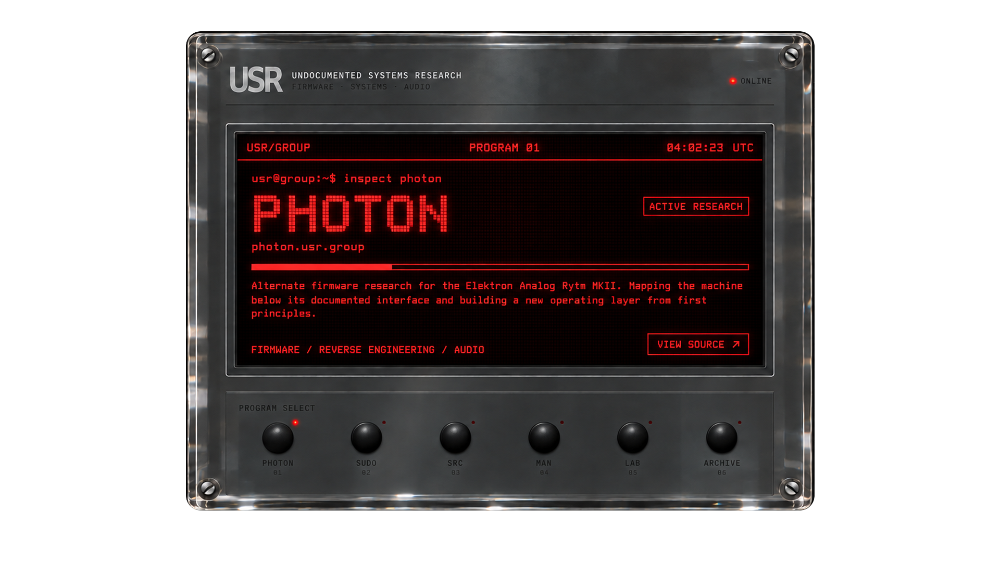

usr@group:~$ inspect photon
PHOTON
photon.usr.group
ACTIVE RESEARCH
Alternate firmware research for the Elektron Analog Rytm MKII. Mapping the machine below its documented interface and building a new operating layer from first principles.